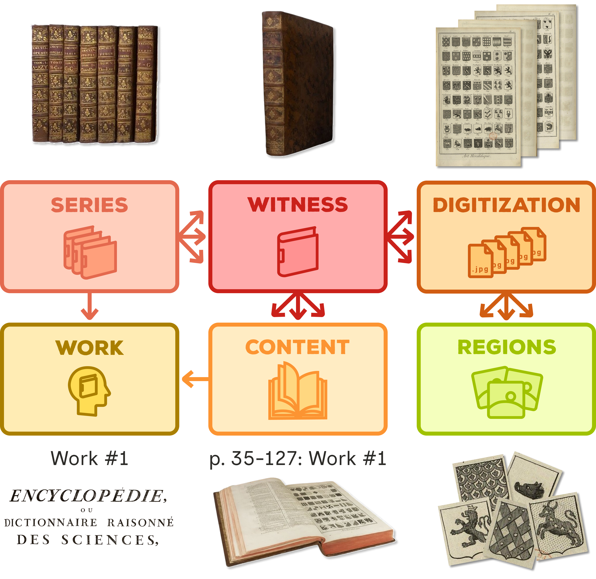
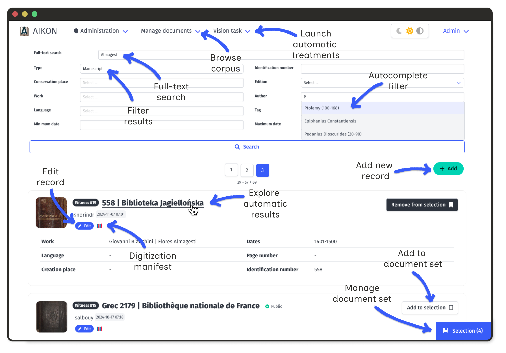
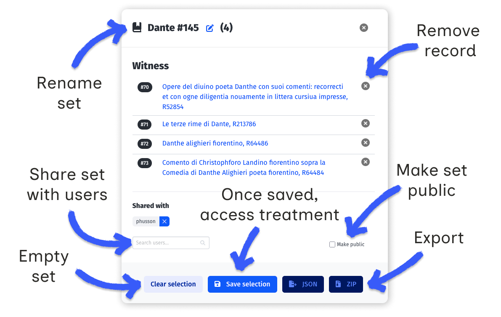
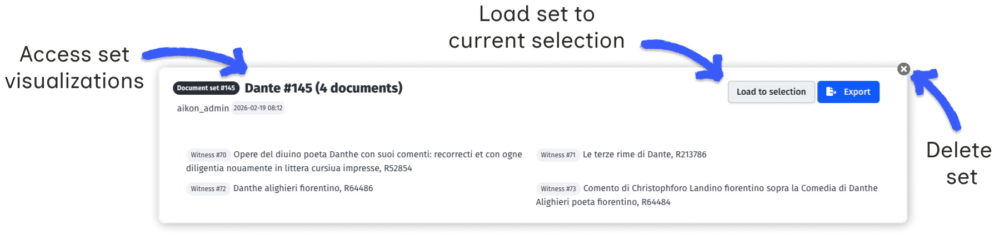

AIKON allows users to build collaborative corpora of historical documents. Documents can be grouped into collections for computer vision processing and visual analysis.
AIKON uses a flexible data model to describe historical documents. This model distinguishes intellectual content from physical materiality, enabling researchers to map connections across scattered corpora.
AIKON's data model relies on six core entities:

Core database entities and their relationships, exemplified with the Encyclopédie of Diderot and D'Alembert.
A witness constitutes the basic unit of AIKON corpus. It represents a distinct physical document that is illustrated by one or several digitizations.
Digitizations can be uploaded as PDF files, groups of images or IIIF manifests. The platform automatically converts them to IIIF manifests.
Detailed information on form fields can be found here.
A document set is a personal collection of witnesses, works, and series. Document sets group materials according to your research logic. They constitute the basis for processing tasks and data visualizations, and can be shared with other users.

Document set can be constituted from scratch or by loading an existing set. Access, modify or empty the content of current set by clicking in the "Selection" button in the bottom right corner.

